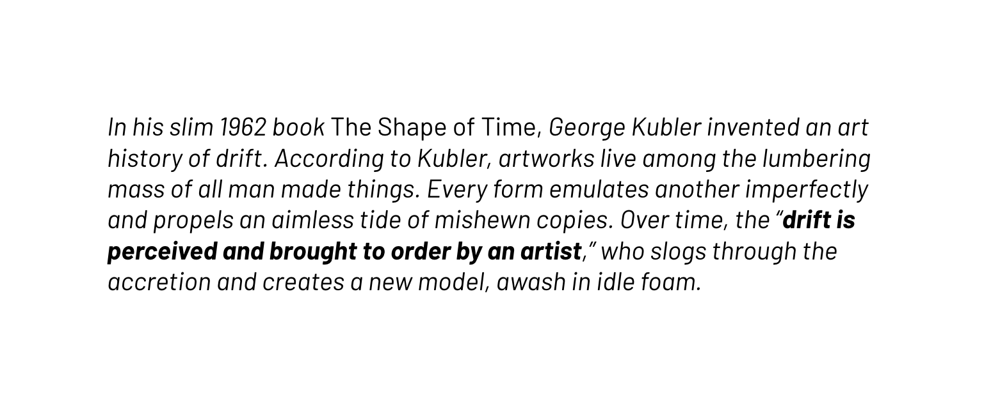

Gallery exhibitions usually come with curatorial text that offers a ready-made interpretation.
This narrative can be comforting. It fills in gaps, flattens ambiguity, and gives people
a little hand-holding on a cold encounter. But it potentially shortcuts a more open-ended
encounter with the work.